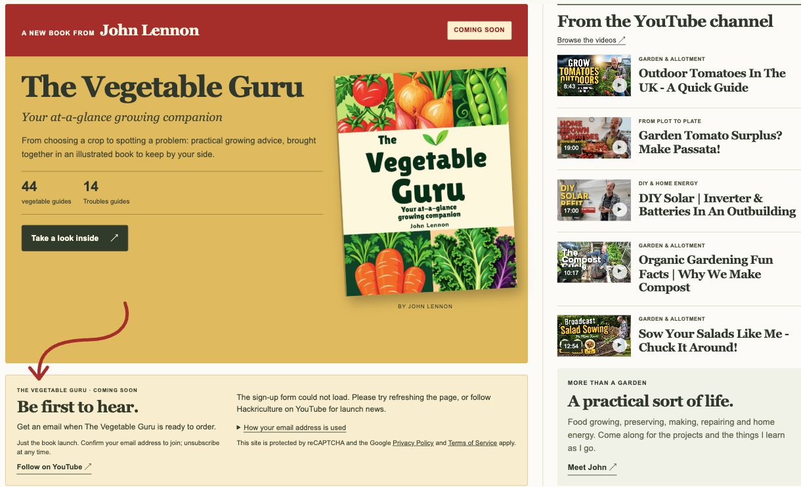
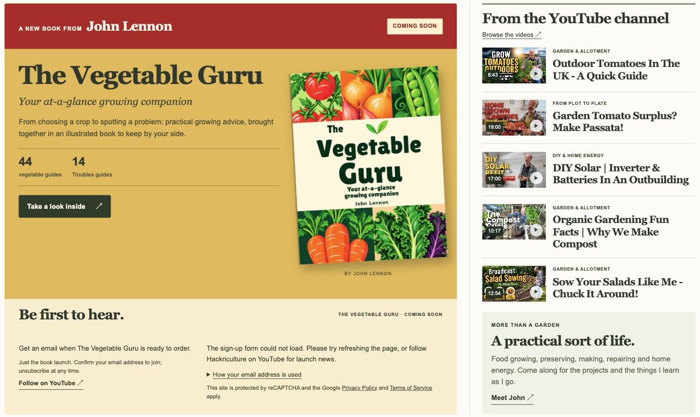

Follow the red arrow.
A curved red arrow starts inside the golden book panel and leads down to the launch sign-up. The two panels retain their separate edges.

Explore the arrow version ↗Two ways to connect The Vegetable Guru with “Be first to hear”. Both include the updated YouTube headings and five videos in the right-hand column, which now lines up with the full book feature.
Compare the layouts below, then open either one to explore the homepage.
A curved red arrow starts inside the golden book panel and leads down to the launch sign-up. The two panels retain their separate edges.

Explore the arrow version ↗The book and sign-up become one continuous panel. “Be first to hear” uses dark text on the same pale-gold background as the sign-up section.

Explore the joined version ↗Selected: the joined panel. John chose the continuous layout, with a pale-gold heading background and dark text.